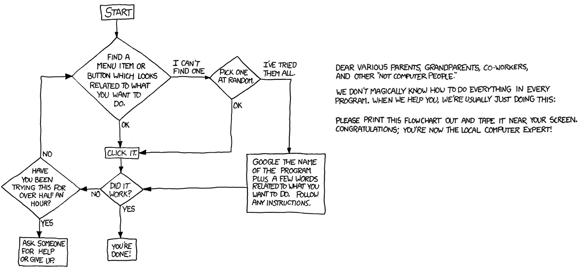
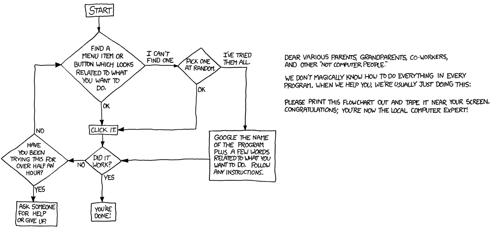

STAT133 introduces you to to a handful of tools from UNIX and Git for you to get a taste of what the two do. I suggest, at minimum, looking at the following two tutorials to expand your toolbox to "minimal proficiency":
https://www.learnenough.com/command-line-tutorial
https://www.learnenough.com/git-tutorial
After going through these two lessons (~1-2 hours apiece), you should pick up other tools on a as-you-need-them basis.
As you run scripts on the server, you might want your code to save cleaned data sets, plots as pngs, etc. Here are a few useful functions and the packages they're in:
| function | package | description |
|---|---|---|
| write_csv | readr | saves a data frame as a csv file |
| write_tsv | readr | saves a data frame as a tsv file (tab-separated) |
| ggsave | ggplot2 | saves a ggplot object as a png or pdf file |
| saveRDS | none | saves an R object as an rds file |
| readRDS | none | loads an rds file (needs to be assigned to a name when loaded) |
| save | none | saves an R object as an rda file |
| load | none | loads an rda file (loads to global environment) |
Good coding style is like using correct punctuation. You can manage without it, but it sure makes things easier to read.
Hadley Wickham
Having a consistent coding style will make it easier to revisit your code should you wish to debug, modify, or enhance your scripts. No style is strictly better than the rest, but I'll be providing a style guide for the rest of the semester that you should try your best to adhere to. As you work with different people, your style will have to adapt to other members' coding preferences.
Let us change our traditional attitude to the construction of programs: Instead of imagining that our main task is to instruct a computer what to do, let us concentrate rather on explaining to human beings what we want a computer to do
Donald Knuth (1984)
Writing functions with descriptive names makes your code more readable:
if(is.numeric(x) & x > 0 & x %% 1 == 0){
TRUE } else {FALSE}
CheckIfPosInt <- function(x) {
# Checks if a number is a positive integer
#
# Args:
# x: a numeric vector
#
# Returns:
# a logical vector of the same length as x
# denoting whether or not the values are
# positive integers
is.numeric(x) & x > 0 & x %% 1 == 0
}
CheckIfPosInt(x)
Visually blocks off your code. Helps you scan your code's structure quickly, making it easier to read, modify, explain, maintain, and enhance:
if(!is.vector(x)) {
stop('x must be a vector')
} else {
if(any(is.na(x))){
x <- x[!is.na(x)]
}
x_sum <- 0
for (i in seq_along(x)) {
x_sum <- x_sum + x[i]
}
x_sum / length(x)
}
if(!is.vector(x)) stop('x must be a vector')
if(any(is.na(x))) {
x <- na.omit(x)
}
x_sum <- 0
for (i in seq_along(x)) {
x_sum <- x_sum + x[i]
}
x_sum / length(x)
}
Don't be afraid to press enter every now and then to separate ideas
stats <- c(min(x), max(x), max(x)-min(x),
quantile(x, probs=0.25), quantile(x, probs=0.75),
IQR(x), median(x), mean(x), sd(x)
)
stats <- c(
min(x),
max(x),
max(x) - min(x),
quantile(x, probs = 0.25),
quantile(x, probs = 0.75),
IQR(x),
median(x),
mean(x),
sd(x)
)